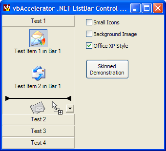
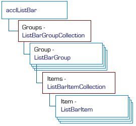
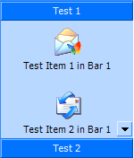

ListBar Control Binary (48K)
ListBar Control Binary (48K)
 ListBar Control Demonstration (84K)
ListBar Control Demonstration (84K)
 ListBar Control Documentation (168K)
ListBar Control Documentation (168K)
 ListBar Control Source (94K)
ListBar Control Source (94K)
 Bugs: 1 / 1
Bugs: 1 / 1
 Issues: 0 / 0
Issues: 0 / 0
 Questions: 0 / 1
Questions: 0 / 1
 7 Sep 2003
7 Sep 2003
First Posted
 Hue, Luminance and Saturation in .NET
Hue, Luminance and Saturation in .NET

.NET Outlook Style ListBar Control
A sophisticated, extensible, easy to use reproduction of the Microsoft Outlook Bar
The .NET ListBar control aims to provide the most accurate reproduction of the Microsoft Outlook bar control. All the features of the Outlook bar control are supported and more: in particular the control provides nicer drag-drop operation, has more display modes and provides an extensible object model which enables it to be used as the basis for more esoteric ListBar style controls.
A .NET ListBar
If you have visited the site before, you may well have seen the VB Classic ListBar control which went so far as to emulate the implementation of the real Outlook control that it used the same underlying controls and window structure. As noted in the article accompanying that control, despite the apparent ease of doing this it wasn't in fact even close to being easy. Therefore this time I took my own advice and started from scratch and implemented everything in Managed Code. Well, almost everything: in-place editing of items and groups requires some Windows API trickery to ensure the edit box is cancelled at the right time. The method used to achieve this, and how to remove it from the control if a 100% managed version is needed, is described later in the article.
Tear-Stained Pillows and Broken Shot Glasses
The consequences of this decision were much less trouble with the under-documented and often incomprehensible ListView API and instead much greater trouble at my own inability to achieve simple tasks such as visualising the trivial two-dimensional transformation of a scrollable view without using a ruler and a model constructed from scraps of paper. Luckily the ready availability of Bison Grass vodka, pressed apple juice and Autechre's Draft 7.30 mean that the .NET control is now finally available, and it is guaranteed not to have the positioning/items disappearing problems which afflicted the earliest releases of the VB version.
About The Downloads
There are three downloads provided with this article.
- The Binary download provides the official vbAccelerator strong-named signed assembly for the control, acclListBar.Dll. This assembly can be registered into the Global Assembly Cache (GAC).
- The Demonstration download uses the signed assembly. You need to have the signed control to run the demonstration; it can either by registed into the GAC or placed into the demonstration executable directory.
- The Source download provides the projects used to develop and release the control. You can copy the ListBar control source into your own project from here, or build your own version if you provide a new strong-name key pair.
Using The Control
The object model of the ListBar control is shown in the diagram below:
ListBar Control Object Model
You should find the object model fairly self-explanatory: full documentation of all of the methods and properties of the control are provided in standard form in the downloads, courtesy of NDoc. However here's a quick-start tutorial on setting up a control.
- Add the Control to your project.
If you are using the control binary, then add a reference to acclListBar.Dll to your project. You then use the very slo-o-o-o-ow Customize Toolbox dialog in VS.NET and pick the control again so it appears in the toolbox. (Why is this necessary?)
To include the control as source code, add ListBar.cs, PopupCancel.cs and CustomBorderColor.cs to your project. Then open ListBar.cs in component designer mode and it will appear in the toolbox.
(Some questions. Firstly, how do you reference items in the GAC from either the Add Reference or Customize Toolbox dialogs? Secondly, how do you set the toolbox bitmap for a control? I got lost in a maze of designer related documentation and am still none the wiser.)
- Creating and Configuring the Control
The control accepts references to two ImageList objects for its icons; one for Large Icons and the other for Small Icons. You can also assign a ToolTip object which the control will use to display objects. The background of the control can be set to a colour (transparent background colours are supported) or an image. You can also set the default font and foreground colour for the control (which can be overridden for individual items and groups).
- Adding Groups and Items to the Control
There are various group and item constructors you can use to create new groups and items, as well as various methods in the collections to append them. When initializing the control, the simplest way is to create new items and then use the Add(string caption, ListBarItem[] subItems) method to create the owning group and append all the items at the same time.
// Create an array to hold the items: ListBarItem[] subItems = new ListBarItem[itemCount]; // Populate each item in the array using a new // ListBarItem created using the caption, icon index, tooltip // constructor: for (int item = 0; item < itemCount; item++) { subItems[item] = new ListBarItem( String.Format("Test Item {0}", item + 1), item, String.Format("Tooltip text for test item {0}", item + 1)); } // Create the new group and add the subitems to it: ListBarGroup group = listBar1.Groups.Add( new ListBarGroup("Group"), subItems));Groups can also contain controls instead of items. To create a bar which contains a control, use the ChildControl property:
ListBarGroup treeGroup = listBar1.Groups.Add("Tree"); treeGroup.ChildControl = tvwCustom;Groups can be selected using the Selected property and hidden or shown with the Visible property. You can also customise the group's appearance by using the Font, ForeColor and BackColor members, or place the group's caption into edit mode using the StartEdit method. The Items property returns the collection of items (if any) contained within the bar. This collection can be sorted (by default the items are sorted alphabetically, however you can also provide your own IComparer to perform a customised sort. Items within the collection are manipulated in much the same way as a group.
- Responding to Events
The main event raised by the control is the ItemClicked event. This is raised whenever an item is selected in the control. A corresponding ItemDoubleClicked event is raised when the user double clicks an item. If you want to be able to display context menus you can also respond to the GroupClicked event.
More sophisticated control can be achieved by responding to BeforeItemClicked and BeforeGroupChanged events. These allow you to cancel an item or group selection. There is also a SelectedGroupChanged event which fires after a group has changed. If items are put into edit mode in the control, then ListView style BeforeLabelEdit and AfterLabelEdit are also available for validation.
Reusable Code Components
The source code for the control also some code which can be extracted and reused for other projects.
The CustomBorderColor class
This class uses the HLS class to create shadow and highlight colours like the ones Windows produces for the 3D object colour for any arbitrary colour.
A method is also provided to draw a thin or thick border using the custom colours.
The PopupCancelNotifier Component
This component is designed to allow you to detemine when a popup object (like the item caption edit text box in the ListBar control) should be cancelled due to the user clicking somewhere else in the control, or otherwise changing focus. This is the area of the control which uses Unmanaged Code; I do not believe it is possible to achieve this in any other way. The problem which occurs with the popup object is as follows:
- The user puts the item into edit mode and the popup object shown.
- The user either decides to cancel editing by clicking somewhere else on the form, or Alt-Tabs to another Window.
If the user clicks somewhere else on the form, the only event which can occur in the control or the popped-up object is LostFocus. However, this only fires if the user clicks on something that can get keyboard input focus - and many .NET objects do not so no event is fired. If the user Alt-Tabs to another Window then the .NET Framework assumes the focused control should not change and again you don't get an event.
The PopupCancelNotifier component works around these issues. It does two things to ensure a popup object is cancelled at the right time: firstly, it installs a Windows Mouse Hook to detect any mouse button presses within the control and secondly it subclasses the form which owns the popup object to check for WM_ACTIVATE Windows messages, which are sent whenever a window is activated or deactivated.
Using this component is simple: create an instance of PopupCancelEventHandler and call the StartTracking method, passing in the Form which owns the control you've popped up (or the Form itself if you're popping up a form). The OnPopupCancel method will be called, raising the PopupCancel event if the item needs to be cancelled, otherwise call the StopTracking method when you're done.
Creating a 100% Managed ListBar Control
It is possible to create a version of the ListBar control that is 100% Managed Code, however, this means that in-place editing of labels must be removed. To do this, remove PopupCancel.cs from the control and then comment out all methods which refer to it and the StartEdit methods of the ListBarGroup and ListBarItem classes. The resulting code will work almost be exactly the same as before but if you want the user to be able to edit item or group captions you will need to provide an alternative UI (for example, a modal dialog).
Conclusion
This article provides a fully-documentated Outlook-style ListBar control for the .NET Framework. The current implementation includes some Unmanaged code but this can be compiled out if desired.